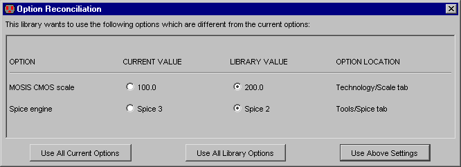

Команда Preferences... (в меню File) содержит множества панелей для контроля за настройками. Вы можете также видеть диалоговое окно , используя значок preferences на панели инструментов.

|
Команда Preferences... (в меню File) содержит множества панелей для контроля за настройками. Вы можете также видеть диалоговое окно , используя значок preferences на панели инструментов. | |

Левая сторона диалогоаого окна Preferences - список с древовидной структурой всех различных панелей настроек. Правая сторона - фактическая панель настроек, которая изменяется при выборе нужной панели. Ниже списка панелей - кнопка "Help", которая ведт Вас к нужной странице в руководстве, которая объясняет ту панель.
Настройки сохраняются постоянно на вашем компьютере и запоминаются каждый раз, когда Вы запусткаете Electric. Фактическое местоположение этой информации различное у каждой операционной системы.
Вы можете удалить соответствующие данные, чтобы сбросить Electric к его первоначальному состоянию.
Вы можете также экспортировать ваши настройки с помощью команды Preferences ... (в меню File / Export), которая запишет XML файл с информацией о настройках. Этот XML файл может быть считан назад в настройки Electric'a с помощью команды Preferences ... (в меню File / Import).
Есть два типа настроек: вид и значение. Настройки вида затрагивают только внешний вид Electric'a при запуске, и не затрагивает фактическую схему. Настройки значения затрагивают интерпретацию данных, и поэтому их параметры настройки являются очень важными для вашей схемы.Хранилища
Electric, означают настройки в каждом библиотечном файле такие, что, когда он считывается обратно, настройки могут быть согласованы с текущими параметрами настройки. Когда считывается библиотека, которая имеет различные настройки, появляется это диалоговое окно: Вы должны выбрать, хотите ли Вы использовать значения в настройках из библиотеки или из текущей установки. Это может быть сделано на основании индивидуальных установок, или для всех настроек которые конфликтуют.